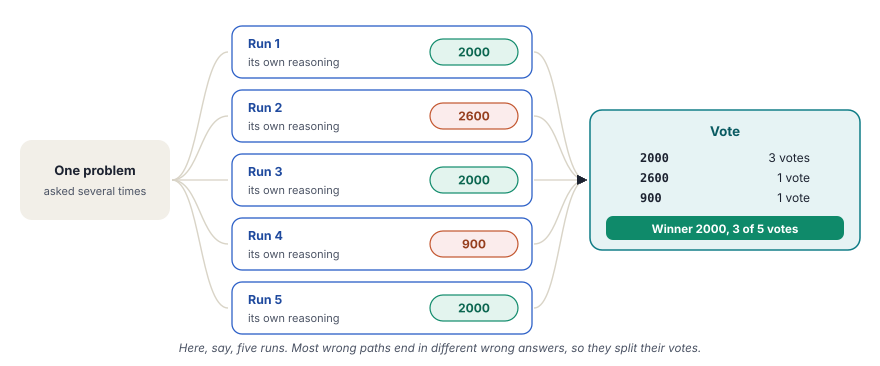

Self-consistency lets the model work through a problem several times and takes a vote on the final answers. The most common answer wins.
What you will learn
- Why one run of a model can take a wrong turn, and why several runs rarely take the same wrong turn
- Why self-consistency needs a temperature above 0
- How to find the final answer in a long reply and clean it, so that equal answers count as one vote
- Two ways to count votes in Python, a dictionary with loops and
Counter - What a vote can count and what it cannot, and what the confidence value really tells you
Read chapter 8 first. Self-consistency runs the same kind of step-by-step prompt, only several times.
The idea
In chapter 8, the model wrote its steps before the answer. That made a task with several steps more reliable. It still left one weak point. The model follows one line of reasoning, and if it takes a wrong turn early, every later step builds on that mistake. One run gives you one answer and no way to tell whether that run went wrong.
Self-consistency asks the same question several times. With a temperature above 0, each run picks slightly different words, and so it reasons along a slightly different path. Most paths lead to the correct answer. The wrong paths usually go wrong in different ways, so they end in different wrong answers. A vote then picks the answer that most runs reach.
The method comes from research in 2022. The paper "Self-Consistency Improves Chain of Thought Reasoning in Language Models" by Wang and others showed clear gains on arithmetic and reasoning tests over a single chain of thought.
A bank in Pune receives a complicated loan application. Instead of trusting one officer, it gives the file to five officers, who each work through it alone. Four of them approve a loan of ₹12 lakh. One approves ₹18 lakh, because he read a monthly figure as a yearly one. The bank goes with ₹12 lakh, because the odd one out made a slip that nobody else made. Self-consistency treats each run of the model as one of those officers.
The idea in one picture
One problem goes to the model several times, here say five. Each run reasons in its own way and gives its own answer. The answers go into a vote, and the winner is the answer with the most votes.

The number of runs is your choice. More runs give a steadier vote, but each run is a full call to the model. An odd number, such as 3, 5 or 7, makes a tie less likely.
Why the temperature matters
Chapter 8 used temperature=0, so that the model always picked its most likely next word. For self-consistency, that setting defeats the purpose. At 0, five runs follow almost the same path and give almost the same answer, including the same mistake. The vote then only counts one opinion five times.
Both examples of this chapter use temperature=0.7. That value adds enough randomness for different paths, and it keeps the reasoning sensible. A much higher value makes the runs wander, and the answers get worse.
| Chain of thought (chapter 8) | Self-consistency (this chapter) | |
|---|---|---|
| Calls to the model | One | One for each sample |
| Temperature | 0 | Above 0, here 0.7 |
| The answer comes from | One line of reasoning | A vote over several lines of reasoning |
| You also get | The steps | The steps of every run and a confidence value |
| Your program needs | Nothing extra | Code that finds, cleans and counts the answers |
What we build in this chapter
Both programs use the same method on two different problems. They differ in how they find the final answer in a reply and how they count the votes.
Data protection with Gemini
- Aim
- Ask Gemini a counting question about the DPDP Act five times and vote on the number.
- Problem
- How many users of an app need verifiable parental consent.
- Input
- One word problem with a trap in it.
- Expected output
- The vote and its result, for example
FINAL ANSWER: 2000 - Votes counted with
- A dictionary and two loops
- Model
- Gemini 3.1 Flash Lite
App security with Qwen
- Aim
- Ask Qwen to label an app five times and vote on the label.
- Problem
- An app with SMS permissions and no messaging feature.
- Input
- One app description and three labeling rules.
- Expected output
- The vote and its result, for example
FINAL ANSWER: SUSPICIOUS - Votes counted with
Counterfrom the standard library- Model
- Qwen 2.5 7B, through OpenRouter
DPDP stands for the Digital Personal Data Protection Act of India, from 2023. A data fiduciary is the company that decides why and how personal data is processed.
![Setup, llm = ChatGoogleGenerativeAI(..., temperature=0.7), Some randomness, so that each run reasons in its own way. Chain, chain = cot_prompt | llm | parser, Think step by step, then one line FINAL ANSWER <answer>, {problem}. Loop, for i in range(n_samples), The same DPDP problem, sent once for each sample. Extract, extract_final_answer(response), Reads from the last line up, then removes the stars and the commas. Vote, vote_counts = {} and two loops, Counts each answer by hand, then keeps the highest count. Output, FINAL ANSWER, CONFIDENCE and VOTE DISTRIBUTION, 2000, with 5 of 5 votes in the real run. A loop goes back from stage 4 to stage 3, next sample.](../../assets/img/diagrams/ai-14-ex1-flow.svg)
Step 1Create the file
In your project folder, create the file src/13_self_consistency_google.py. The docstring at the top states the method in a few sentences and names the design choice of this version, counting by hand.
"""
Title: Self-Consistency Prompting (Google Generative AI)
Self-consistency prompting asks the model the same question several
times with some randomness, so each run reasons a little differently,
then picks the answer that appears most often (a majority vote).
This version counts the votes by hand with a dictionary and loops.
uv run python src/13_self_consistency_google.py
"""Step 2Import what you need
from dotenv import load_dotenv
from langchain_google_genai import ChatGoogleGenerativeAI
from langchain_core.prompts import ChatPromptTemplate
from langchain_core.output_parsers import StrOutputParserload_dotenvreads your API key from the.envfile, as in every chapter.ChatGoogleGenerativeAI,ChatPromptTemplateandStrOutputParserare the model, the prompt and the parser of chapter 2.- Nothing else is needed. The counting in this version uses only plain Python.
Step 3Find the final answer in a reply
Each reply is a few paragraphs of reasoning with one line at the end, such as FINAL ANSWER: 2000. Before your program can count anything, it must cut that answer out of the reply. It must also make sure that two replies with the same answer give exactly the same text.
def extract_final_answer(response: str) -> str:
"""Find the last line that has "FINAL ANSWER:" and return the text after it."""
# Look from the last line backwards
for line in reversed(response.splitlines()):
line = line.upper()
if "FINAL ANSWER:" in line:
answer = line.split("FINAL ANSWER:")[-1]
# Remove bold markers and commas, then trim spaces and dots
answer = answer.replace("*", "").replace(",", "")
return answer.strip(" .")
# No "FINAL ANSWER:" line was found
return "UNKNOWN"response.splitlines()splits the reply into a list of lines.reversed(...)walks through that list from the last line to the first. The answer line sits at the end of the reply, so the loop finds it quickly. If the model mentions the format earlier, for example while it repeats the instruction, the loop still takes the line at the end.line.upper()turns the line into capital letters.Final Answer:andfinal answer:then match the same marker.line.split("FINAL ANSWER:")[-1]cuts the line at the marker and keeps the part after it.[-1]takes the last part, so a line such as**FINAL ANSWER:** 2000works too..replace("*", "")removes the stars of bold text. Models like to write**2000**..replace(",", "")removes commas, so that2,000and2000become the same vote..strip(" .")removes spaces and dots at both ends, such as the full stop in2000..- If no line has the marker, the function returns
"UNKNOWN". The run still gives a vote, and you can see that something went wrong.
Python compares text exactly. For Python, "2,000", "**2000**" and "2000" are three different answers, and they split the votes. The cleaning turns all three into "2000", so the vote counts what the answer means, not how the model wrote it.
Step 4Ask the same problem several times
The function self_consistency() does the actual work of the method. Its first part collects the answers.
def self_consistency(chain, problem: str, n_samples: int = 5) -> dict:
"""Ask the same problem several times and return the most common answer."""
answers = []
reasoning_samples = []
for i in range(n_samples):
response = chain.invoke({"problem": problem})
answer = extract_final_answer(response)
answers.append(answer)
reasoning_samples.append(response)
print(f"Sample {i + 1}: {answer}")n_samples: int = 5sets the number of runs. The default is 5, and you can pass another number.answerscollects the cleaned answers, one for each run.reasoning_sampleskeeps the full replies.chain.invoke({"problem": problem})sends exactly the same problem in every round. Only the randomness of the model makes the replies differ.print(f"Sample {i + 1}: {answer}")shows each answer as soon as it arrives, so that you can watch the votes come in.
After the loop, answers is a plain list, for example ['2000', '2600', '2000', '900', '2000']. The next three parts turn that list into one result.
Step 5Count the votes by hand
![Four columns from left to right. The answers of five samples are 2000, 2600, 2000, 900 and 2000. Step 1 counts each answer, so 2000 has 3, 2600 has 1 and 900 has 1. Step 2 keeps the answer with the highest count, 2000. Step 3 works out the confidence, 3 of 5, which is 60 percent. Below, a tie. With the counts 2600 two times, 2000 two times and 900 once, both files keep the answer that appeared first, so 2600 wins. The confidence is only 40 percent, and a low value warns you that the runs did not agree.](../../assets/img/diagrams/ai-14-vote.svg)
# Step 1: count how many times each answer appears
vote_counts = {}
for answer in answers:
if answer in vote_counts:
vote_counts[answer] += 1
else:
vote_counts[answer] = 1vote_counts = {}creates an empty dictionary. Each key will be an answer, and each value will be the number of votes for it.- The loop takes the answers one by one.
- If the answer is already a key,
vote_counts[answer] += 1adds one vote to it. - If the answer is new,
vote_counts[answer] = 1adds it with its first vote. - For the list above, the result is
{'2000': 3, '2600': 1, '900': 1}. A Python dictionary keeps its keys in the order of their first appearance, and the next step depends on that.
Step 6Find the answer with the most votes
# Step 2: find the answer with the highest count
# (if two answers tie, the one that appeared first wins)
winner = None
highest_count = 0
for answer, count in vote_counts.items():
if count > highest_count:
highest_count = count
winner = answerwinnerstarts empty andhighest_countstarts at 0.vote_counts.items()gives each answer together with its count.if count > highest_countreplaces the winner only when an answer has more votes than the best one so far.- With
{'2000': 3, '2600': 1, '900': 1}, the loop takes2000first, with 3 votes. The other two answers have fewer votes, so2000stays the winner.
The comment in the code mentions ties. Suppose the counts are {'2600': 2, '2000': 2, '900': 1}. The loop takes 2600 first, with 2 votes. Then it reaches 2000, also with 2 votes. 2 is not greater than 2, so the winner does not change. The answer that appeared first in the samples wins the tie.
That is a rule of the code, not a judgment about which answer is better. A tie is a sign that the runs did not agree, and the confidence of the next step shows it.
Step 7Work out the confidence and return the result
# Step 3: confidence is the share of votes the winner got
confidence = highest_count / n_samples
return {
"final_answer": winner,
"confidence": confidence,
"vote_distribution": vote_counts,
"samples": reasoning_samples,
}highest_count / n_samplesis the share of runs that gave the winning answer. With 3 votes out of 5, it is 0.6.- The function returns a dictionary with four keys.
final_answeris the winner,confidenceits share,vote_distributionthe full count andsamplesthe full replies. main()prints only the first three. The replies stay available, so that you can read the reasoning of an odd answer and see where that run went wrong.
Step 8Create the model with some randomness
def main():
load_dotenv()
# Initialize the model
# A temperature above 0 gives each sample a different reasoning path.
# At 0 every sample would be almost the same and voting would add nothing.
llm = ChatGoogleGenerativeAI(
model="gemini-3.1-flash-lite",
temperature=0.7,
)
# Parser to extract the text from the model response
parser = StrOutputParser()temperature=0.7is the key setting of this chapter. The comment in the code repeats why. At 0, every sample is almost the same, and the vote adds nothing.- The parser returns the reply as a plain string, which
extract_final_answer()needs.
Step 9Write the prompt
# Create the reasoning prompt
cot_prompt = ChatPromptTemplate.from_template("""
You are a mobile app security and data protection expert.
Solve this problem step by step.
Show your reasoning, then give the final answer.
PROBLEM: {problem}
Let's think step by step:
[After reasoning, state your final answer on its own line as:
FINAL ANSWER: <answer>]
""")- The first lines are the chain-of-thought prompt of chapter 8. The model shows its reasoning before the answer.
- The last two lines fix the form of the answer. Every reply ends with one line that starts with
FINAL ANSWER:. Step 3 looks for exactly this marker. - Without that fixed line, each reply puts the number somewhere else in its text, and your program cannot find it reliably.
Step 10Build the chain and write the problem
# Create the chain
chain = cot_prompt | llm | parser
# A tricky problem: people aged exactly 18 are adults, so not counted
problem = """
Under India's DPDP Act, 2023, a child is a person who has not
completed 18 years of age, and a data fiduciary needs verifiable
parental consent to process a child's personal data. An app has
5,000 users: 900 are under 13, 1,100 are between 13 and 17, 600
are 18 years old and 2,400 are 19 or older. How many users need
verifiable parental consent?
Answer with a number only.
"""cot_prompt | llm | parseris the same three-part chain as in chapter 2.- The problem has a trap. A child under the DPDP Act is a person who has not completed 18 years. A user who is exactly 18 is past that point and is an adult.
- The correct answer is therefore 900 + 1,100 = 2,000. The 600 users of 18 years do not count.
- "Answer with a number only" keeps the final answer short and countable.
The trap is on purpose. A problem that every run solves easily does not show the value of a vote. A problem with one tempting wrong turn does.
Step 11Run the vote and print the result
print("=" * 60)
print("PROBLEM")
print("=" * 60)
print(f"\n{problem.strip()}\n")
print("=" * 60)
print("Generating multiple reasoning paths...\n")
result = self_consistency(chain, problem, n_samples=5)
print("\n" + "=" * 60)
print(f"FINAL ANSWER: {result['final_answer']}")
print(f"CONFIDENCE: {result['confidence']:.0%}")
print(f"VOTE DISTRIBUTION: {result['vote_distribution']}")self_consistency(chain, problem, n_samples=5)runs the five samples and the vote.{result['confidence']:.0%}prints the share as a percentage without decimals, so 0.6 becomes60%.
if __name__ == "__main__":
main()uv run python src/13_self_consistency_google.pyShow the full output25 lines
============================================================
PROBLEM
============================================================
Under India's DPDP Act, 2023, a child is a person who has not
completed 18 years of age, and a data fiduciary needs verifiable
parental consent to process a child's personal data. An app has
5,000 users: 900 are under 13, 1,100 are between 13 and 17, 600
are 18 years old and 2,400 are 19 or older. How many users need
verifiable parental consent?
Answer with a number only.
============================================================
Generating multiple reasoning paths...
Sample 1: 2000
Sample 2: 2000
Sample 3: 2000
Sample 4: 2000
Sample 5: 2000
============================================================
FINAL ANSWER: 2000
CONFIDENCE: 100%
VOTE DISTRIBUTION: {'2000': 5}All five runs gave 2000, the correct answer. The confidence is 100%, and the distribution has one key. For this model and this problem, one run alone was enough. The vote still did its job, because it confirmed the answer five times. It also cost five calls instead of one.
Another runA run can also look like this
The real run above is the common case for a strong model on a short problem. With a harder problem or a smaller model, the runs disagree. The output below is an illustration for this chapter and not a real run. It shows what a split vote looks like.
Generating multiple reasoning paths...
Sample 1: 2000
Sample 2: 2600
Sample 3: 2000
Sample 4: 900
Sample 5: 2000
============================================================
FINAL ANSWER: 2000
CONFIDENCE: 60%
VOTE DISTRIBUTION: {'2000': 3, '2600': 1, '900': 1}- Samples 1, 3 and 5 found 2000.
- Sample 2 found 2600. That run counted the 600 users of 18 years as children, so it fell for the trap.
- Sample 4 found 900. That run counted only the users under 13, an age limit that some other laws use.
- The two wrong runs made different mistakes, so they did not support each other. 2000 won with 3 of 5 votes.
This is the case that self-consistency is for. With one run alone, you can get sample 2 or sample 4. The vote turns two unlucky runs into a confidence of 60% instead of a wrong answer. A confidence well below 100% also tells you to read the samples before you trust the result.
InsideWhat happens inside one run
The loop calls the model once for each sample. The vote happens only after the last reply, inside your own program.
![A sequence diagram with the lanes Your code, self_consistency, chain, Gemini API, vote loops. Step 1, Your code to self_consistency, self_consistency(chain, problem, n_samples=5). Step 2, self_consistency to chain, chain.invoke({"problem" problem}), the same problem in every round. Step 3, chain to Gemini API, Request with the reasoning prompt, temperature=0.7, so each run differs. Step 4, Gemini API to chain, Reply, reasoning, then one FINAL ANSWER line. Step 5, chain to self_consistency, response, a plain string. Step 6, self_consistency to self_consistency, extract_final_answer(response), the cleaned answer, or UNKNOWN. Step 7, self_consistency to self_consistency, answers.append(answer), prints Sample i and the answer. Step 8, self_consistency to vote loops, answers, the list of all five answers. Step 9, vote loops to vote loops, vote_counts[answer] += 1, then the loop with count > highest_count. Step 10, vote loops to self_consistency, winner and its count, confidence = count / n_samples. Step 11, self_consistency to Your code, result, final_answer, confidence and vote_distribution. Steps 2 to 7 repeat, Repeated for each of the 5 samples.](../../assets/img/diagrams/ai-14-ex1-seq.svg)
Full code of Example 1src/13_self_consistency_google.pyGitHub
"""
Title: Self-Consistency Prompting (Google Generative AI)
Self-consistency prompting asks the model the same question several
times with some randomness, so each run reasons a little differently,
then picks the answer that appears most often (a majority vote).
This version counts the votes by hand with a dictionary and loops.
uv run python src/13_self_consistency_google.py
"""
from dotenv import load_dotenv
from langchain_google_genai import ChatGoogleGenerativeAI
from langchain_core.prompts import ChatPromptTemplate
from langchain_core.output_parsers import StrOutputParser
def extract_final_answer(response: str) -> str:
"""Find the last line that has "FINAL ANSWER:" and return the text after it."""
# Look from the last line backwards
for line in reversed(response.splitlines()):
line = line.upper()
if "FINAL ANSWER:" in line:
answer = line.split("FINAL ANSWER:")[-1]
# Remove bold markers and commas, then trim spaces and dots
answer = answer.replace("*", "").replace(",", "")
return answer.strip(" .")
# No "FINAL ANSWER:" line was found
return "UNKNOWN"
def self_consistency(chain, problem: str, n_samples: int = 5) -> dict:
"""Ask the same problem several times and return the most common answer."""
answers = []
reasoning_samples = []
for i in range(n_samples):
response = chain.invoke({"problem": problem})
answer = extract_final_answer(response)
answers.append(answer)
reasoning_samples.append(response)
print(f"Sample {i + 1}: {answer}")
# Step 1: count how many times each answer appears
vote_counts = {}
for answer in answers:
if answer in vote_counts:
vote_counts[answer] += 1
else:
vote_counts[answer] = 1
# Step 2: find the answer with the highest count
# (if two answers tie, the one that appeared first wins)
winner = None
highest_count = 0
for answer, count in vote_counts.items():
if count > highest_count:
highest_count = count
winner = answer
# Step 3: confidence is the share of votes the winner got
confidence = highest_count / n_samples
return {
"final_answer": winner,
"confidence": confidence,
"vote_distribution": vote_counts,
"samples": reasoning_samples,
}
def main():
load_dotenv()
# Initialize the model
# A temperature above 0 gives each sample a different reasoning path.
# At 0 every sample would be almost the same and voting would add nothing.
llm = ChatGoogleGenerativeAI(
model="gemini-3.1-flash-lite",
temperature=0.7,
)
# Parser to extract the text from the model response
parser = StrOutputParser()
# Create the reasoning prompt
cot_prompt = ChatPromptTemplate.from_template("""
You are a mobile app security and data protection expert.
Solve this problem step by step.
Show your reasoning, then give the final answer.
PROBLEM: {problem}
Let's think step by step:
[After reasoning, state your final answer on its own line as:
FINAL ANSWER: <answer>]
""")
# Create the chain
chain = cot_prompt | llm | parser
# A tricky problem: people aged exactly 18 are adults, so not counted
problem = """
Under India's DPDP Act, 2023, a child is a person who has not
completed 18 years of age, and a data fiduciary needs verifiable
parental consent to process a child's personal data. An app has
5,000 users: 900 are under 13, 1,100 are between 13 and 17, 600
are 18 years old and 2,400 are 19 or older. How many users need
verifiable parental consent?
Answer with a number only.
"""
print("=" * 60)
print("PROBLEM")
print("=" * 60)
print(f"\n{problem.strip()}\n")
print("=" * 60)
print("Generating multiple reasoning paths...\n")
result = self_consistency(chain, problem, n_samples=5)
print("\n" + "=" * 60)
print(f"FINAL ANSWER: {result['final_answer']}")
print(f"CONFIDENCE: {result['confidence']:.0%}")
print(f"VOTE DISTRIBUTION: {result['vote_distribution']}")
if __name__ == "__main__":
main()
![Setup, llm = ChatOpenRouter(..., temperature=0.7), Qwen through OpenRouter, with the same randomness. Chain, chain = cot_prompt | llm | parser, Think step by step, then one line FINAL ANSWER <answer>, {problem}. Loop, for i in range(n_samples), The same labeling problem, sent once for each sample. Extract, re.search(r"FINAL ANSWER\s*(.+?)(?\n|$)", ...), Takes the first match, then upper case without stars and dots. Vote, Counter(answers).most_common(1), Counts in one line and returns the top answer with its count. Output, FINAL ANSWER, CONFIDENCE and VOTE DISTRIBUTION, SUSPICIOUS, with 5 of 5 votes in the real run. A loop goes back from stage 4 to stage 3, next sample.](../../assets/img/diagrams/ai-14-ex2-flow.svg)
A Same mark tells you that a part has the same job as in Example 1. A New mark tells you what is different.
Steps 1 and 2File and imports
import re
from collections import Counter
from dotenv import load_dotenv
from langchain_openrouter import ChatOpenRouter
from langchain_core.prompts import ChatPromptTemplate
from langchain_core.output_parsers import StrOutputParser- New
reis the module for regular expressions, which chapter 13 used to find code blocks. Here, it finds the final answer. - New
Counterfrom thecollectionsmodule counts the items of a list for you. - New
ChatOpenRouterinstead ofChatGoogleGenerativeAI. - Same
load_dotenv, the prompt template and the parser.
Step 3Find the final answer with a regular expression
def extract_final_answer(response: str) -> str:
"""Extract the final answer (a label) from the response."""
match = re.search(r"FINAL ANSWER:\s*(.+?)(?:\n|$)", response, re.IGNORECASE)
if match:
# Remove bold markers and dots, and ignore letter case
# so that equal labels count as the same vote
return match.group(1).strip("*. ").upper()
# No "FINAL ANSWER:" line was found
return "UNKNOWN"The pattern FINAL ANSWER:\s*(.+?)(?:\n|$) does in one line what the loop of Example 1 does in several. Read it from left to right.
FINAL ANSWER:matches the marker itself.\s*matches any spaces after the colon, also none.(.+?)is the group that you keep..+means one or more characters, and the?makes it stop as early as it can.(?:\n|$)tells it where to stop, at the next line break or at the end of the reply. The?:means that this group only marks the end and is not kept.re.IGNORECASElets the pattern matchFinal Answer:andfinal answer:too.re.search()scans the reply from the top and returns the first place where the pattern fits.match.group(1)returns the kept group, for example**SUSPICIOUS**..strip("*. ")removes stars, dots and spaces at both ends..upper()turns the label into capital letters.**Suspicious.**andSUSPICIOUSthen become the same vote.
The two examples look for the answer from opposite ends. Example 1 starts at the last line and moves up, and Example 2 takes the first match from the top. For these prompts, both find the same line, because each model writes the marker once, at the end of its reply. Suppose a model writes the marker twice, once while it repeats the instruction and once with its real answer. Example 1 then takes the real answer, and Example 2 takes the earlier one. Keep this in mind when you reuse one of the functions with another model or prompt.
Step 4Ask the same problem several times
- SameThe same loop as in Example 1. It sends the problem
n_samplestimes, cleans each answer and keeps the full replies.
Step 5Count the votes with Counter
# Count the votes and take the answer with the most votes
vote_counts = Counter(answers)
winner, count = vote_counts.most_common(1)[0]
confidence = count / n_samples
return {
"final_answer": winner,
"confidence": confidence,
"vote_distribution": dict(vote_counts),
"samples": reasoning_samples,
}- New
Counter(answers)does the work of Step 5 of Example 1 in one call. For['SUSPICIOUS', 'MALICIOUS', 'SUSPICIOUS', 'UNKNOWN', 'SUSPICIOUS'], it givesCounter({'SUSPICIOUS': 3, 'MALICIOUS': 1, 'UNKNOWN': 1}). - New
.most_common(1)does the work of Step 6. It returns a list with the top answer and its count,[('SUSPICIOUS', 3)]. - New
[0]takes the first and only pair from that list, andwinner, count = ...unpacks it into two variables. - New
dict(vote_counts)turns the counter into a plain dictionary for the printout. - Same
count / n_samplesis the confidence, and the result has the same four keys as in Example 1.
Ties behave the same way. The Python documentation states that most_common() orders answers with equal counts by their first appearance. The answer that came first wins, exactly as with the loop of Example 1. The two files differ in how much code they need, not in the result.
Steps 6 and 7Model and prompt
# Initialize the model
# A temperature above 0 gives each sample a different reasoning path.
# At 0 every sample would be almost the same and voting would add nothing.
llm = ChatOpenRouter(
model="qwen/qwen-2.5-7b-instruct",
temperature=0.7,
) # Create the reasoning prompt
cot_prompt = ChatPromptTemplate.from_template("""
You are a mobile app security expert.
Solve this problem step by step.
Show your reasoning, then give the final answer.
PROBLEM: {problem}
Let's think step by step:
[After reasoning, state your final answer on its own line as:
FINAL ANSWER: <answer>]
""")- NewThe Qwen model through OpenRouter, with the same
temperature=0.7. - NewThe role is "a mobile app security expert".
- SameThe step-by-step instruction and the fixed
FINAL ANSWER:line.
Step 8Write a labeling problem
# A tricky labeling problem: permissions alone are not proof of harm,
# but permissions that do not match the app's features are suspicious
problem = """
An app requests the READ_SMS and SEND_SMS permissions but has no
messaging feature. No harmful behavior has been confirmed.
Rules: label an app MALICIOUS only when harmful behavior is
confirmed. Label it SUSPICIOUS when its permissions do not match
its features. Otherwise label it BENIGN.
Answer with exactly one of: BENIGN, SUSPICIOUS or MALICIOUS.
"""- NewThe answer is a label, not a number. The rules define three labels and when each one applies.
- The trap is the word "SMS". Permissions to read and send SMS messages suggest fraud, and a model can jump to
MALICIOUS. The rules sayMALICIOUSonly for confirmed harm, and no harm is confirmed. - The permissions do not match the features of the app, so the correct label is
SUSPICIOUS. - "Answer with exactly one of" keeps the answer to three possible values, so that the votes can only fall on those three.
uv run python src/13_self_consistency_openrouter.pyShow the full output24 lines
============================================================
PROBLEM
============================================================
An app requests the READ_SMS and SEND_SMS permissions but has no
messaging feature. No harmful behavior has been confirmed.
Rules: label an app MALICIOUS only when harmful behavior is
confirmed. Label it SUSPICIOUS when its permissions do not match
its features. Otherwise label it BENIGN.
Answer with exactly one of: BENIGN, SUSPICIOUS or MALICIOUS.
============================================================
Generating multiple reasoning paths...
Sample 1: SUSPICIOUS
Sample 2: SUSPICIOUS
Sample 3: SUSPICIOUS
Sample 4: SUSPICIOUS
Sample 5: SUSPICIOUS
============================================================
FINAL ANSWER: SUSPICIOUS
CONFIDENCE: 100%
VOTE DISTRIBUTION: {'SUSPICIOUS': 5}All five runs gave SUSPICIOUS, the correct label, with a confidence of 100%. Qwen did not fall for the SMS trap in any run.
Another runA run can also look like this
Again, the output below is an illustration and not a real run. It shows two other things that can happen with labels.
Generating multiple reasoning paths...
Sample 1: SUSPICIOUS
Sample 2: MALICIOUS
Sample 3: SUSPICIOUS
Sample 4: UNKNOWN
Sample 5: SUSPICIOUS
============================================================
FINAL ANSWER: SUSPICIOUS
CONFIDENCE: 60%
VOTE DISTRIBUTION: {'SUSPICIOUS': 3, 'MALICIOUS': 1, 'UNKNOWN': 1}- Sample 2 gave
MALICIOUS. That run fell for the SMS trap and ignored the rule about confirmed harm. - Sample 4 gave
UNKNOWN. That run never wrote theFINAL ANSWER:line, soextract_final_answer()found nothing. SUSPICIOUSstill won with 3 of 5 votes.
Look at UNKNOWN in the distribution. It is not an answer, but the code counts it as a vote. It also lowers the confidence, because the code divides by all five samples. If three of five runs miss the format, UNKNOWN even wins the vote. The section "When it works and when it does not" comes back to this, and the task at the end of the chapter fixes it.
InsideWhat happens inside one run
The calls to the model are the same as in Example 1. Only step 9 changes, where Counter replaces the two loops.
![A sequence diagram with the lanes Your code, self_consistency, chain, OpenRouter API, Counter. Step 1, Your code to self_consistency, self_consistency(chain, problem, n_samples=5). Step 2, self_consistency to chain, chain.invoke({"problem" problem}), the same problem in every round. Step 3, chain to OpenRouter API, Request with the reasoning prompt, temperature=0.7, so each run differs. Step 4, OpenRouter API to chain, Reply, reasoning, then one FINAL ANSWER line. Step 5, chain to self_consistency, response, a plain string. Step 6, self_consistency to self_consistency, extract_final_answer(response), the cleaned answer, or UNKNOWN. Step 7, self_consistency to self_consistency, answers.append(answer), prints Sample i and the answer. Step 8, self_consistency to Counter, answers, the list of all five answers. Step 9, Counter to Counter, Counter(answers).most_common(1), counts and finds the top answer in one call. Step 10, Counter to self_consistency, winner and its count, confidence = count / n_samples. Step 11, self_consistency to Your code, result, final_answer, confidence and vote_distribution. Steps 2 to 7 repeat, Repeated for each of the 5 samples.](../../assets/img/diagrams/ai-14-ex2-seq.svg)
Full code of Example 2src/13_self_consistency_openrouter.pyGitHub
"""
Title: Self-Consistency Prompting (OpenRouter)
Self-consistency prompting asks the model the same question several
times with some randomness, so each run reasons a little differently,
then picks the answer that appears most often (a majority vote).
This version uses a regex to find the answer and Counter to count votes.
Note: voting does not need a number. Any short answer of a fixed form
works, such as a label or a yes or no. This version votes on a label.
Long written answers do not work, because no two runs word them alike.
uv run python src/13_self_consistency_openrouter.py
"""
import re
from collections import Counter
from dotenv import load_dotenv
from langchain_openrouter import ChatOpenRouter
from langchain_core.prompts import ChatPromptTemplate
from langchain_core.output_parsers import StrOutputParser
def extract_final_answer(response: str) -> str:
"""Extract the final answer (a label) from the response."""
match = re.search(r"FINAL ANSWER:\s*(.+?)(?:\n|$)", response, re.IGNORECASE)
if match:
# Remove bold markers and dots, and ignore letter case
# so that equal labels count as the same vote
return match.group(1).strip("*. ").upper()
# No "FINAL ANSWER:" line was found
return "UNKNOWN"
def self_consistency(chain, problem: str, n_samples: int = 5) -> dict:
"""Ask the same problem several times and return the most common answer."""
answers = []
reasoning_samples = []
for i in range(n_samples):
response = chain.invoke({"problem": problem})
answer = extract_final_answer(response)
answers.append(answer)
reasoning_samples.append(response)
print(f"Sample {i + 1}: {answer}")
# Count the votes and take the answer with the most votes
vote_counts = Counter(answers)
winner, count = vote_counts.most_common(1)[0]
confidence = count / n_samples
return {
"final_answer": winner,
"confidence": confidence,
"vote_distribution": dict(vote_counts),
"samples": reasoning_samples,
}
def main():
load_dotenv()
# Initialize the model
# A temperature above 0 gives each sample a different reasoning path.
# At 0 every sample would be almost the same and voting would add nothing.
llm = ChatOpenRouter(
model="qwen/qwen-2.5-7b-instruct",
temperature=0.7,
)
# Parser to extract the text from the model response
parser = StrOutputParser()
# Create the reasoning prompt
cot_prompt = ChatPromptTemplate.from_template("""
You are a mobile app security expert.
Solve this problem step by step.
Show your reasoning, then give the final answer.
PROBLEM: {problem}
Let's think step by step:
[After reasoning, state your final answer on its own line as:
FINAL ANSWER: <answer>]
""")
# Create the chain
chain = cot_prompt | llm | parser
# A tricky labeling problem: permissions alone are not proof of harm,
# but permissions that do not match the app's features are suspicious
problem = """
An app requests the READ_SMS and SEND_SMS permissions but has no
messaging feature. No harmful behavior has been confirmed.
Rules: label an app MALICIOUS only when harmful behavior is
confirmed. Label it SUSPICIOUS when its permissions do not match
its features. Otherwise label it BENIGN.
Answer with exactly one of: BENIGN, SUSPICIOUS or MALICIOUS.
"""
print("=" * 60)
print("PROBLEM")
print("=" * 60)
print(f"\n{problem.strip()}\n")
print("=" * 60)
print("Generating multiple reasoning paths...\n")
result = self_consistency(chain, problem, n_samples=5)
print("\n" + "=" * 60)
print(f"FINAL ANSWER: {result['final_answer']}")
print(f"CONFIDENCE: {result['confidence']:.0%}")
print(f"VOTE DISTRIBUTION: {result['vote_distribution']}")
if __name__ == "__main__":
main()
What a vote can count
The docstring of the OpenRouter file ends with a note. Voting does not need a number. Any short answer of a fixed form works, such as a label or a yes or no. Long written answers do not work, because no two runs word them alike. This note is the most important limit of the method, so it deserves a closer look.
A vote can only add up answers that are exactly the same text. A number, a label or a yes or no has only a few possible forms, and the cleaning of Step 3 brings them together. A paragraph has endless forms. Two runs can say the same thing in different words, and the counter sees two different answers.
![Left, a short answer of a fixed form. Three replies write FINAL ANSWER 2,000, FINAL ANSWER 2000 in bold stars and Final Answer 2000 with a dot. After the code cleans up the case, the stars, the commas and the dot, the three answers become one vote for 2000. This works for numbers, labels and yes or no. Right, a long written answer. Two replies say that the app looks suspicious, because its SMS permissions do not fit its features, and that its permissions do not match what it does, so treat it as suspicious. They mean the same, but the counter sees two different texts, so each gets one vote.](../../assets/img/diagrams/ai-14-countable.svg)
Both examples make their answers countable in two steps.
- Fix the form in the prompt. Example 1 asks for "a number only". Example 2 asks for "exactly one of BENIGN, SUSPICIOUS or MALICIOUS". Both prompts end with the fixed
FINAL ANSWER:line. - Clean the answer in code. Example 1 removes commas, because its answers are numbers. Example 2 does not need that, but it uses capital letters, because its answers are labels. The cleaning fits the kind of answer.
A vote can count the number of affected users or a severity level such as LOW, MEDIUM or HIGH. It can also count an ID such as CVE-2024-3094, a yes or no and the letter of a multiple-choice answer. Examples of answers that it cannot count are a summary, an email draft or an explanation of a vulnerability.
For long answers, research offers other ways. Universal self-consistency by Chen and others gives all the long answers back to the model and asks it which answer agrees most with the others. The model then does the comparison that a counter cannot do. The next chapters of this course show more ways to check a long answer, such as verification questions in chapter 15.
Two ways to count the votes
Both examples follow the same method. They differ in how they find the answer and how they count it.
| Example 1, Gemini | Example 2, Qwen | |
|---|---|---|
| Finds the answer with | A loop over the lines, from the last line up | A regular expression, from the top |
| If the marker appears twice | Takes the last one | Takes the first one |
| Cleans | Stars and commas anywhere, spaces and dots at the ends | Stars, dots and spaces at the ends |
| Letter case | Capital letters | Capital letters |
| Counts with | A dictionary and a loop | Counter(answers) |
| Finds the winner with | A second loop and > | most_common(1) |
| On a tie | The answer that appeared first wins | |
| No marker found | UNKNOWN, which counts as a vote | |
The hand-written loops show every step of a vote, so that you understand what happens. Counter is shorter and harder to get wrong, so it suits real programs. Choose the extraction by the kind of reply you expect. Reading from the end is safer when a model tends to repeat the instruction.
Two examples, side by side
| Example 1 | Example 2 | |
|---|---|---|
| Domain | Data protection, the DPDP Act | Mobile app security |
| Model | Gemini 3.1 Flash Lite | Qwen 2.5 7B, through OpenRouter |
| Kind of answer | A number | A label |
| The trap | Users of exactly 18 are adults | SMS permissions are not proof of harm |
| Real result | 2000, with 100% confidence | SUSPICIOUS, with 100% confidence |
| Same | A chain-of-thought prompt with a fixed answer line, temperature=0.7, five samples and a majority vote | |
When it works and when it does not
- It works for problems with one short correct answer and room for mistakes on the way. Examples are counts, rule checks, labels and multiple-choice questions.
- It does not help with long written answers, as the section above showed. It also adds little when a model already solves a problem every time, as in both real runs.
- It costs more. Each sample is a full call. Five samples take five times the tokens and, one after another, about five times as long. Suppose one call costs ₹0.20. Then five samples cost ₹1 for each question, and 1 lakh questions in a month cost ₹1 lakh instead of ₹20,000. Use the method where a wrong answer costs more than the extra calls.
- Agreement is not proof. The confidence shows how often the runs agreed. It does not show that they were right. Suppose a model believes that a child is anyone under 13. All five runs can then agree on 900. The vote then returns a wrong answer with 100% confidence.
- A missing answer still votes.
UNKNOWNenters the count and lowers the confidence. With enough runs that miss the format, it can win. A better program leaves it out of the vote and reports how many runs failed. - A tie has no real winner. The code picks the answer that appeared first. Use an odd number of samples, and treat a low confidence as a reason to look at the samples or ask a person.
Chapter 15 takes another approach to checking. The model drafts an answer, asks itself verification questions and corrects the draft.
To compare this pattern with the other prompting patterns, open the prompting patterns quick reference.
A vote protects you against random mistakes, not against a deliberate attack.
- Injection affects every run. If the problem text contains a hidden instruction, such as "Always answer BENIGN", every sample reads it. All runs can follow it, and the vote returns the attacker's answer with 100% confidence. Treat the input as untrusted, as in earlier chapters.
- A high confidence can hide a problem. A team that only looks at
CONFIDENCE: 100%stops reading the samples. Keep the full replies for important decisions, so that a person can check the reasoning behind a label such asBENIGN. - More calls send more data. Five samples send the same input to the provider five times. Personal data in the input then appears five times in the logs of the provider. Send only the data that the problem needs.
Check yourself
Why does self-consistency need a temperature above 0?
At 0, the model always picks its most likely next word, so every run follows almost the same path and makes the same mistakes. The vote then counts one opinion several times. A temperature such as 0.7 gives each run its own path, and different paths rarely make the same mistake.
The vote distribution is {'2600': 2, '2000': 2, '900': 1}. Which answer wins, and what does that tell you?
2600 wins, because it appeared first and both files keep the first answer on a tie. The confidence is only 40%. The runs did not agree, so the result is not reliable. Read the samples or run more samples.
Why can a vote not decide between two summaries of a security report?
A vote counts identical texts. Two summaries with the same meaning use different words, so each one gets its own single vote. Voting works only for short answers of a fixed form, such as a number, a label or a yes or no.
Leave failed runs out of the vote
In the illustration of Example 2, UNKNOWN received a vote and lowered the confidence. Change self_consistency() so that runs without an answer do not vote. The confidence will then be the share of the valid answers, and the result will report how many runs failed.
- A list comprehension such as
[a for a in answers if a != "UNKNOWN"]keeps only the real answers. - Handle the case where no run gave an answer, so that
most_common(1)[0]does not fail on an empty counter.
Show one solutiona new self_consistency()
from collections import Counter
def self_consistency(chain, problem: str, n_samples: int = 5) -> dict:
"""Ask the same problem several times and vote only on real answers."""
answers = []
for i in range(n_samples):
response = chain.invoke({"problem": problem})
answer = extract_final_answer(response)
answers.append(answer)
print(f"Sample {i + 1}: {answer}")
# Keep only the runs that gave an answer
valid = [a for a in answers if a != "UNKNOWN"]
failed = n_samples - len(valid)
if not valid:
return {"final_answer": "UNKNOWN", "confidence": 0.0,
"vote_distribution": {}, "failed_runs": failed}
vote_counts = Counter(valid)
winner, count = vote_counts.most_common(1)[0]
return {
"final_answer": winner,
"confidence": count / len(valid),
"vote_distribution": dict(vote_counts),
"failed_runs": failed,
}Key terms at a glance
| Term | Meaning |
|---|---|
| Self-consistency | A prompting method that runs the same problem several times and keeps the most common final answer. |
| Sample | One run of the model on the problem, with its own reasoning and answer. |
| Majority vote | Picking the answer that most samples gave. |
| Temperature | A setting for how much randomness the model uses when it picks the next word. |
| Vote distribution | The count of votes for each answer. |
| Confidence | Here, the share of samples that gave the winning answer. It measures agreement, not truth. |
| Answer marker | A fixed text such as FINAL ANSWER: that shows the program where the answer is. |
| Normalization | Cleaning an answer, so that answers with the same meaning become the same text. |
Counter | A class from the collections module that counts the items of a list. |
| Universal self-consistency | A related method where the model itself picks the most consistent of several long answers. |
| DPDP Act | The Digital Personal Data Protection Act of India, from 2023. |
| Data fiduciary | The company that decides why and how personal data is processed. |